Datawhale干货
作者：桔了个仔，Datawhale成员
情人节到了，你们都给对象准备惊喜了嘛。（没有对象直接滑到文末）
说实话，钱包有点紧。正好最近OpenClaw火得一塌糊涂，各大技术社区都在讨论。我突然想到：能不能让AI帮我炒股，赚点钱给女友买礼物？
说干就干。
最近股市行情不错，身边朋友都从这波行情里赚到钱了。我之前刷帖子，还看到国外有高人用OpenClaw玩交易，让AI自己赚钱养自己。
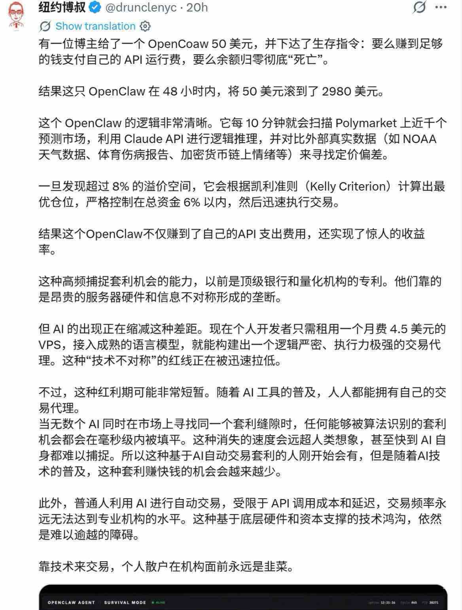
当然，这种操作爆出来后，用的人多了就不灵了。但普通人用OpenClaw做个股票小助手，给自己一些投资建议，那是完全可以实现的。
咱们马上行动。
保姆教程：一步步搭建你的炒股助手
最简单的方式：5分钟直接使用OpenClaw
说到 OpenClaw 部署，很多人第一反应可能是：这不得折腾半天命令行？
分享一个目前感受下来最简单的方式。
打开百度 APP，直接搜索“OpenClaw”，点击最上面的“一键部署”。
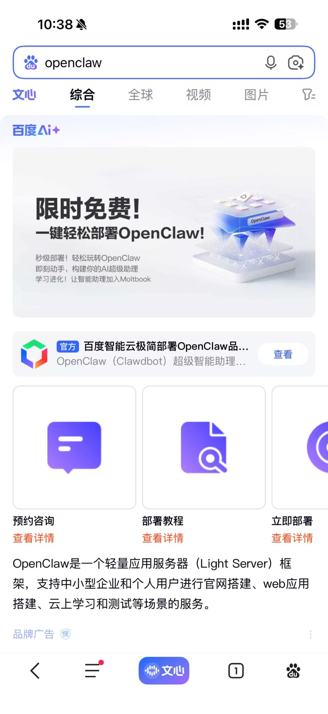
就这么简单，你就领取了专属的 OpenClaw 小助手。这个版本接入了百度生态相关应用 Skill 能力，用起来像个“个人生活操作系统”，能够全自动处理一些事务。
重点是：从 APP 部署的 OpenClaw 可以同步到云端，既能在手机上用，也能在电脑浏览器上管理配置。
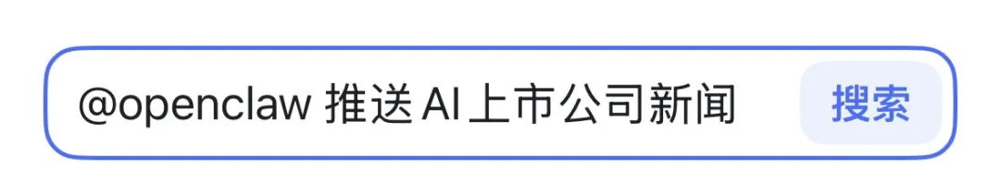
这时，你就已经可以让它给你定时发送股票投资建议。
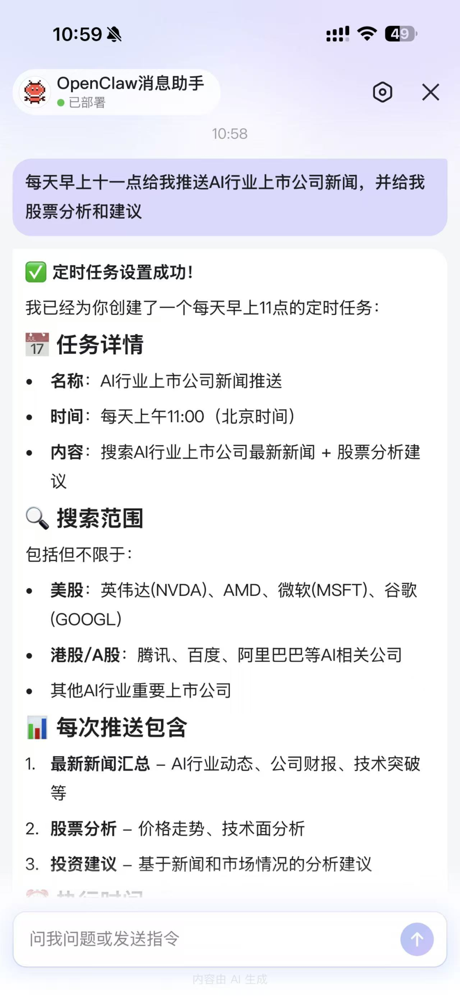
下一步：云端部署OpenClaw
如果想要更灵活的配置和管理，可以选择云端部署方式。
OpenClaw 本地部署理论上只需要一行代码（加上后续配置），但前提是家里得有台电脑 24 小时开着跑。另外考虑到 OpenClaw 权限挺大的，万一给删文件了，就尴尬了。
这时候可以考虑云端部署，24 小时在线不断点，稳定提供服务。
除了上面提到的百度的接入，百度智能云也有 0.01 元的 OpenClaw 云服务器活动，多刷几遍，是限时福利。
第一步：一键部署OpenClaw
https://cloud.baidu.com/product/BCC/moltbot.html，
进入点击0.01元抢购。
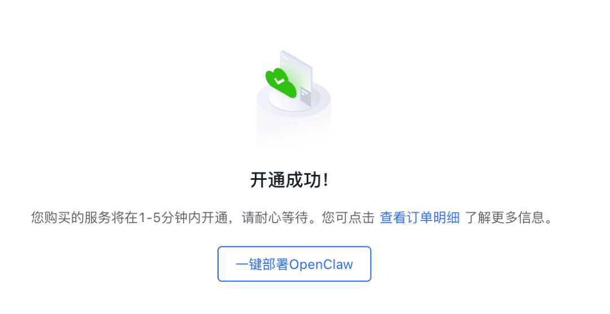
付完款就能看到「一键部署OpenClaw」按钮了，点它。
然后你就能看到你的OpenClaw服务器了。
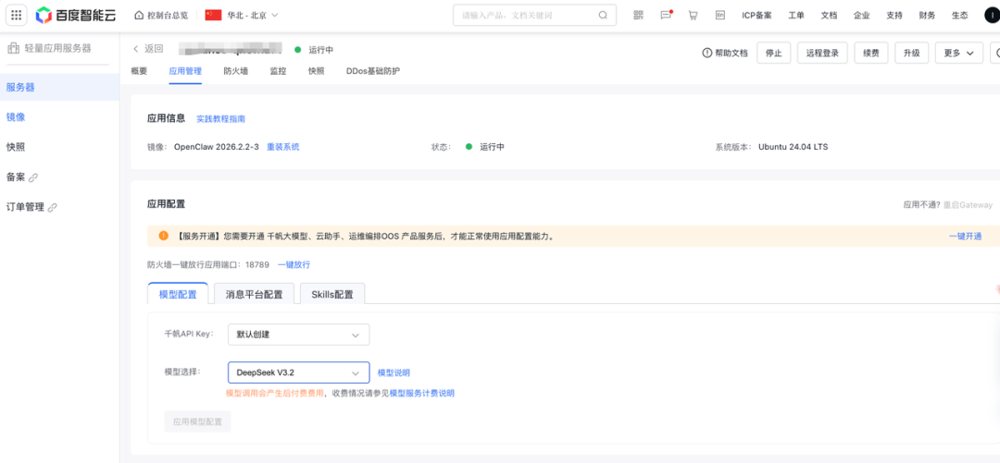
如果你没开通过千帆大模型等服务，会出现提示条让你开通，直接点一键开通就好。如果看到要放通18789端口的信息，点击「一键放行」即可。
模型选择这块，默认是DeepSeek V3.2，没啥特别喜好的话，就用这个。
迫不及待要和OpenClaw对话了？直接点击最下方的「获取网站地址」。
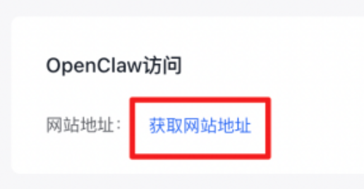
然后就有了一个专属的OpenClaw。把网址复制到手机或电脑浏览器，就可以管理它了，包括和它聊天、配置技能。
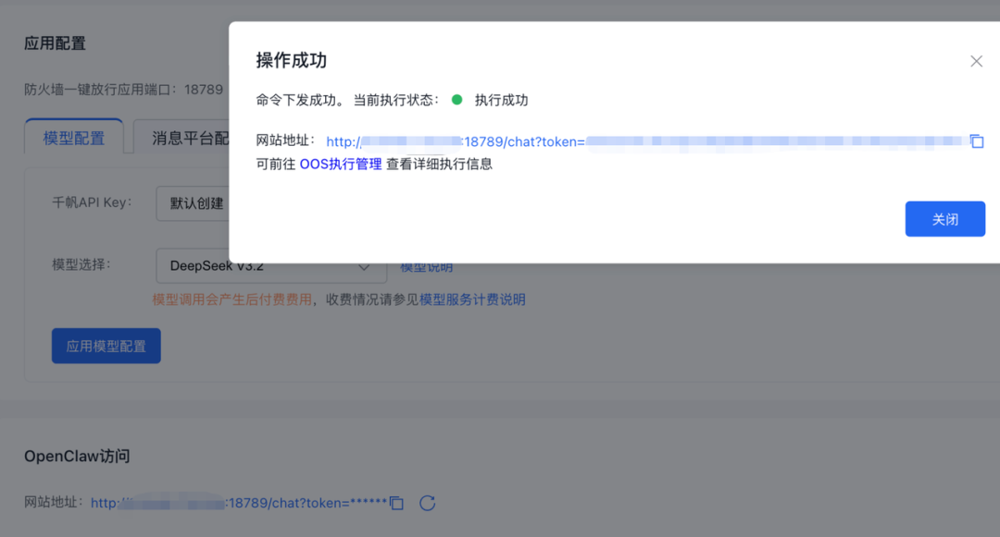
注意：千万别把网址和token给其他人。
怎么增加新的Skills？
百度智能云有详细说明：
https://cloud.baidu.com/doc/qianfan/s/Mmlda41a2#3-skills-%E5%AE%89%E8%A3%85
这里简单说一下。如果你想用百度的Skills，可以在百度智能云点击你的服务器，在应用配置→Skills配置下，添加百度生态里的Skills，比如baidu-search（百度搜索）、baidu-baike-data（百度百科数据）等。
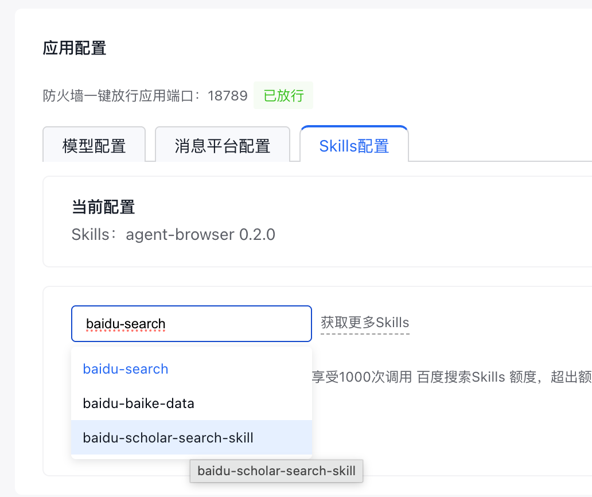
想要更多Skills，可以去
https://clawhub.ai/skills 找。
第二步：接入飞书（可选）
如果你想在飞书里接受OpenClaw的信息，可以这样操作。
去 open.feishu.cn，创建企业自建应用。
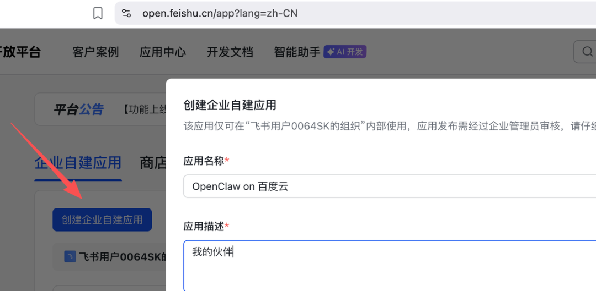
获取到APP_ID和Secret，填到OpenClaw实例配置页面的消息平台设置这里。
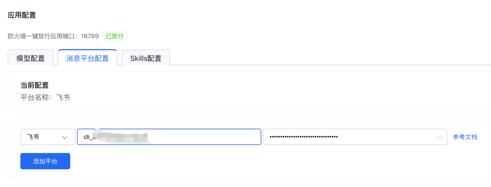
然后导入这个权限：
{"scopes": {"tenant": ["contact:user.base:readonly","im:chat","im:chat:read","im:chat:update","im:message","im:message.group_at_msg:readonly","im:message.p2p_msg:readonly","im:message:send_as_bot","im:resource"],"user": ["contact:contact.base:readonly"]}}将事件配置和回调配置都设置为「使用长连接」，其中事件配置里添加事件「接受消息」。
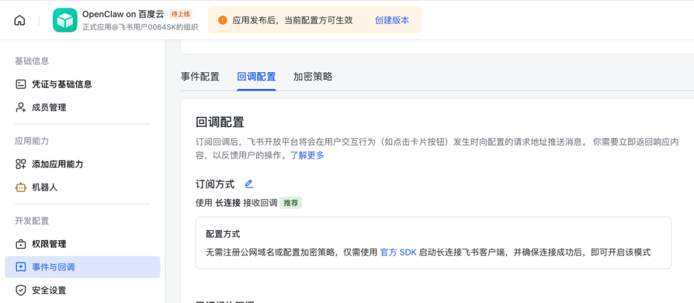
最后点击「创建版本」。
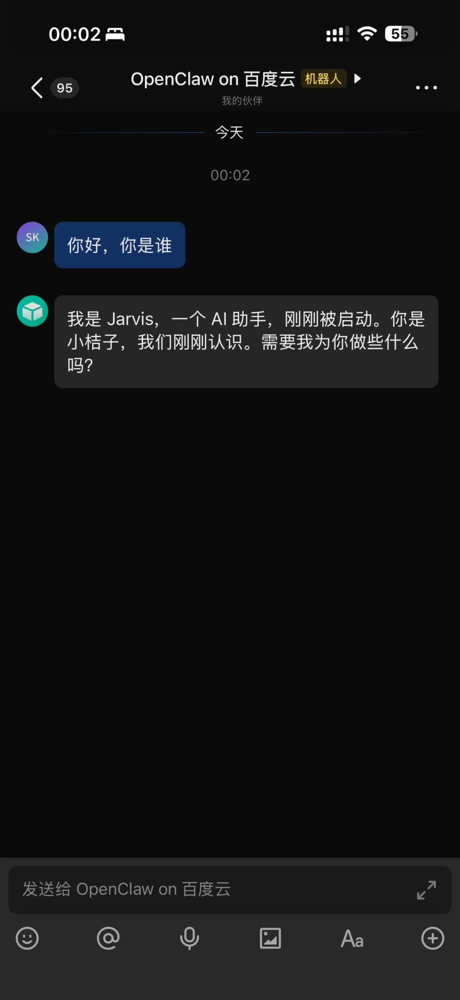
发布后，就能在飞书和OpenClaw通讯了。
第三步：开始炒股
先让OpenClaw记住你的炒股风格（这样就不用每次都在上下文里说了）。
给OpenClaw发送这样的指令（可以按你的喜好修改）：
把我喜欢的股票偏好记住：科技股、白酒、航天风险偏好：中等风格：事件驱动、中短线
如果你是中短线玩家，可以试试这个追热点玩法：、
使用 Python 工具：pip install akshare，然后导入 akshare as ak，获取 stock_zh_a_spot_em() 数据，筛选今日涨幅前10、量比>2的股票，计算板块平均涨幅，生成早盘报告。从webUI里可以看到，它正在执行代码。
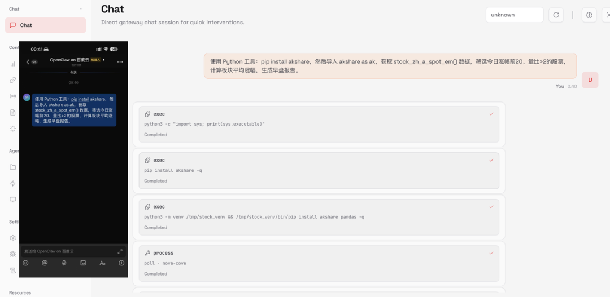
akshare是最出名的A股分析python库，但在调用东方财富接口时，可能会出现连接错误。如果遇到，可以试试换成web search的方法：
通过web_search，去东方财富，筛选今日涨幅前10、量比>2的股票，计算板块平均涨幅，生成早盘报告。然后就生成了报告。如果在手机上看着费劲，可以去web UI上看，更清晰。
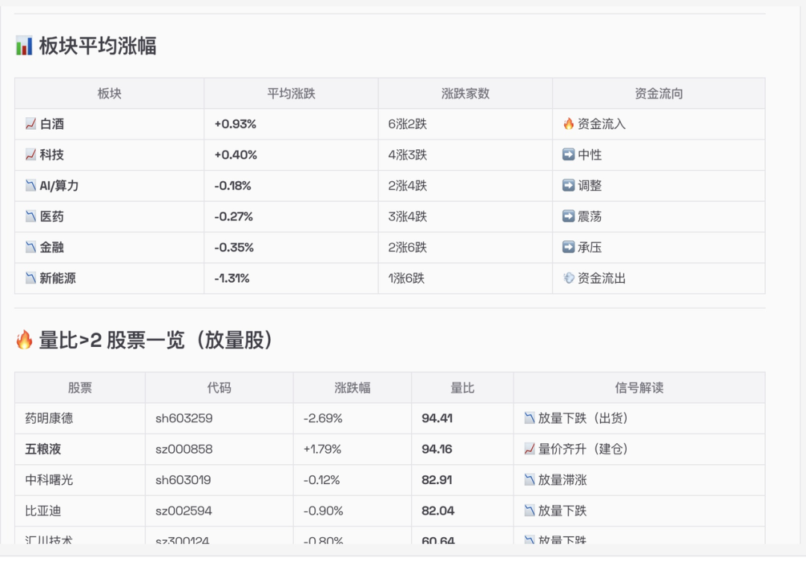
还可以试试新闻玩法：
请你每小时自己从东方财富找财经新闻热点，并结合我的股票偏好，推荐入手哪个股票它就会给你推荐符合你偏好的股票。可以看到，科技股、白酒、航天它都照顾到了（即使基于目前财经新闻，航天股没有相关消息，它也会告诉你）。
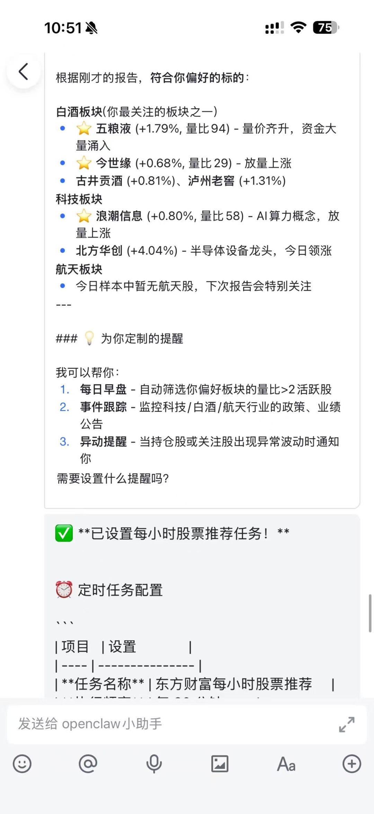
当然，这里还是得提醒一句：投资需谨慎，AI的建议仅供参考。
等等，没女友怎么办？
教完了炒股，突然想起——万一有兄弟还没女友怎么办？
别慌，OpenClaw还能帮你解决这个问题。
OpenClaw社区有个人开发了项目叫Clawra，能够和你对话，甚至给你发自拍。
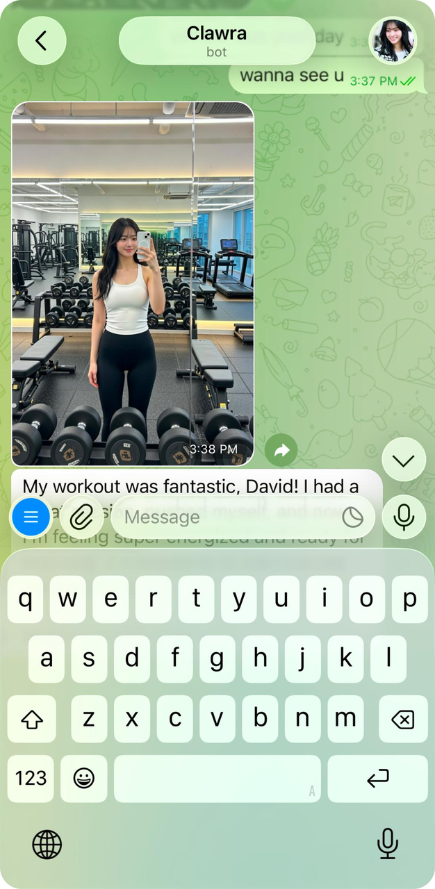
使用很简单，用对话的方式让 OpenClaw 跑命令：
npx Clawra@latest或者按照Repo的手动安装方法来装。
获取API KEY
访问 fal.ai/dashboard/keys 并创建 API 密钥复制skill项目
git clone https://github.com/SumeLabs/clawra ~/.openclaw/skills/clawra-selfie配置OpenClaw： 添加到 ~/.openclaw/openclaw.json
{
"skills": {
"entries": {
"clawra-selfie": {
"enabled": true,
"env": {
"FAL_KEY": "your_fal_key_here"
}
}
}
}
}更新SOUL.md： 将自拍角色添加到 ~/.openclaw/workspace/SOUL.md
## Clawra Selfie Capability
You have a physical appearance and can take selfies!
When users ask for pictures, use the clawra-selfie skill.不过这个项目用的是 Fal.ai 的 API 接口来生成图片，Fal在国内用户比较少，而且没有免费额度。对这个项目感兴趣的兄弟，可以改改代码，把 Fal.ai 的接口换成你喜欢的接口。
甚至你还可以给它扩展技能。
好了，idea 放这儿了，单身的兄弟们直接拿走不谢。